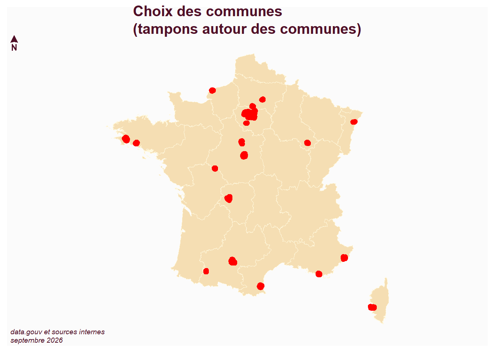

L6ECSIG Construction et utilisation des SIG 2025/26
(Gr. 6 et , Jeudi 16h30 - 19h30 Salle 217 sur le campus de Clignancourt)
L’idée du cours est de consolider les acquis de la L2 et de familiariser les étudiants à Arcgis pro et au codage avec R (une plateforme de versioning très utilisée.)
La thématique utilisée est Commune pauvre et/ou riche ?
Données
limites communes dans OSM
carreaux filosofi 200 m (données infra communales)
données ofgl (données communales)
Déroulé
Code
data <-read.csv("data/deroule.csv", header = T, fileEncoding ="UTF-8")knitr::kable(data)
num
date
détail.prévu
exercice.pts
TD1
29.01.26
Recherches de données
3
TD2
05.02.26
Géoréférencement
1
TD3
12.02.26
Traitements vectoriels
2
TD4
19.02.26
traitements rasters
1
TD5
26.02.26
MNS et MNT
1
TD6
12.03.26
Jointures attributaires et spatiales
2
TD7
19.03.26
Réseaux
NA
TD8
26.03.26
Markdown + structure projet ET objets dans R : vecteurs et dataframe
NA
TD9
02.04.26
intégrer des données spatiales : format gpkg
NA
TD10
09.04.26
Géotraitement
NA
TD11
16.04.26
Résultat (affichage carte) + oral de présentation des projets (5 mn par groupe)
NA
TD12
07.05.26
Rendu de projet (aucun retard toléré) + révisions partiel
NA
Evaluation
régime du contrôle continu,
Deux notes :
- une partiel
- une note maison (+ les exercices pour moitié de la note maison)
Le partiel sera sur machine d’une durée de 1h30 : - un exercice sous Arcgis Pro (10 pt) - et un autre sous R(10 pt) (avec un rendu en .pdf)
Données
Il s’agit de vos données pour la commune choisie. Principalement :
OFGL
Filosofi
communes choisies
Code
choix <-read.csv("data/codeINSEEetudiant.csv")choix <-c(choix$choix.de.la.commune..code.INSEE., choix$choix.de.la.commune..code.INSEE..1)# on enlève les NA et les villes identiqueschoix <-unique(choix[!is.na(choix)])
couches <-st_layers("data/construction.gpkg")couches <- couches$nameunion <-NULLc <- couches [1]for (c in couches){ tmp <-st_read("data/construction.gpkg", c) tmp <-st_union(tmp$geom) tmp <-st_as_sf(tmp) union <-rbind(tmp,union)}
Reading layer `73' from data source
`C:\Users\tachasa\L6ECSIG\data\construction.gpkg' using driver `GPKG'
Simple feature collection with 16387 features and 35 fields
Geometry type: POLYGON
Dimension: XY
Bounding box: xmin: 904530.9 ymin: 6448964 xmax: 1019792 ymax: 6541000
Projected CRS: RGF93 v1 / Lambert-93
Reading layer `97' from data source
`C:\Users\tachasa\L6ECSIG\data\construction.gpkg' using driver `GPKG'
Simple feature collection with 0 features and 35 fields
Bounding box: xmin: NA ymin: NA xmax: NA ymax: NA
Projected CRS: RGF93 v1 / Lambert-93
Reading layer `93' from data source
`C:\Users\tachasa\L6ECSIG\data\construction.gpkg' using driver `GPKG'
Simple feature collection with 4238 features and 35 fields
Geometry type: POLYGON
Dimension: XY
Bounding box: xmin: 647797.6 ymin: 6856393 xmax: 670975.5 ymax: 6876433
Projected CRS: RGF93 v1 / Lambert-93
Reading layer `31' from data source
`C:\Users\tachasa\L6ECSIG\data\construction.gpkg' using driver `GPKG'
Simple feature collection with 42359 features and 35 fields
Geometry type: POLYGON
Dimension: XY
Bounding box: xmin: 492211.1 ymin: 6184815 xmax: 622517.3 ymax: 6314320
Projected CRS: RGF93 v1 / Lambert-93
Reading layer `95' from data source
`C:\Users\tachasa\L6ECSIG\data\construction.gpkg' using driver `GPKG'
Simple feature collection with 8763 features and 35 fields
Geometry type: POLYGON
Dimension: XY
Bounding box: xmin: 598612.2 ymin: 6868539 xmax: 669369.1 ymax: 6905080
Projected CRS: RGF93 v1 / Lambert-93
Reading layer `64' from data source
`C:\Users\tachasa\L6ECSIG\data\construction.gpkg' using driver `GPKG'
Simple feature collection with 38211 features and 35 fields
Geometry type: POLYGON
Dimension: XY
Bounding box: xmin: 312045.4 ymin: 6195724 xmax: 457828.4 ymax: 6282631
Projected CRS: RGF93 v1 / Lambert-93
Reading layer `44' from data source
`C:\Users\tachasa\L6ECSIG\data\construction.gpkg' using driver `GPKG'
Simple feature collection with 45780 features and 35 fields
Geometry type: POLYGON
Dimension: XY
Bounding box: xmin: 280820.8 ymin: 6650266 xmax: 402652.8 ymax: 6757550
Projected CRS: RGF93 v1 / Lambert-93
Reading layer `69' from data source
`C:\Users\tachasa\L6ECSIG\data\construction.gpkg' using driver `GPKG'
Simple feature collection with 28758 features and 35 fields
Geometry type: POLYGON
Dimension: XY
Bounding box: xmin: 796702.5 ymin: 6485519 xmax: 867698.1 ymax: 6579416
Projected CRS: RGF93 v1 / Lambert-93
Reading layer `92' from data source
`C:\Users\tachasa\L6ECSIG\data\construction.gpkg' using driver `GPKG'
Simple feature collection with 3288 features and 35 fields
Geometry type: POLYGON
Dimension: XY
Bounding box: xmin: 637203.4 ymin: 6847947 xmax: 651502.3 ymax: 6872269
Projected CRS: RGF93 v1 / Lambert-93
Reading layer `28' from data source
`C:\Users\tachasa\L6ECSIG\data\construction.gpkg' using driver `GPKG'
Simple feature collection with 17735 features and 35 fields
Geometry type: POLYGON
Dimension: XY
Bounding box: xmin: 534055.8 ymin: 6763261 xmax: 624538.5 ymax: 6871478
Projected CRS: RGF93 v1 / Lambert-93
Reading layer `78' from data source
`C:\Users\tachasa\L6ECSIG\data\construction.gpkg' using driver `GPKG'
Simple feature collection with 15076 features and 35 fields
Geometry type: POLYGON
Dimension: XY
Bounding box: xmin: 586663.8 ymin: 6816723 xmax: 643074 ymax: 6887707
Projected CRS: RGF93 v1 / Lambert-93
Reading layer `33' from data source
`C:\Users\tachasa\L6ECSIG\data\construction.gpkg' using driver `GPKG'
Simple feature collection with 54580 features and 35 fields
Geometry type: POLYGON
Dimension: XY
Bounding box: xmin: 362510.7 ymin: 6350085 xmax: 487702.7 ymax: 6505085
Projected CRS: RGF93 v1 / Lambert-93
Reading layer `50' from data source
`C:\Users\tachasa\L6ECSIG\data\construction.gpkg' using driver `GPKG'
Simple feature collection with 41602 features and 35 fields
Geometry type: POLYGON
Dimension: XY
Bounding box: xmin: 343258.5 ymin: 6826360 xmax: 424701.9 ymax: 6968769
Projected CRS: RGF93 v1 / Lambert-93
Reading layer `49' from data source
`C:\Users\tachasa\L6ECSIG\data\construction.gpkg' using driver `GPKG'
Simple feature collection with 38684 features and 35 fields
Geometry type: POLYGON
Dimension: XY
Bounding box: xmin: 372020 ymin: 6659681 xmax: 492038.4 ymax: 6753919
Projected CRS: RGF93 v1 / Lambert-93
Reading layer `72' from data source
`C:\Users\tachasa\L6ECSIG\data\construction.gpkg' using driver `GPKG'
Simple feature collection with 36668 features and 35 fields
Geometry type: POLYGON
Dimension: XY
Bounding box: xmin: 442429.8 ymin: 6722111 xmax: 544689.7 ymax: 6823353
Projected CRS: RGF93 v1 / Lambert-93
Reading layer `63' from data source
`C:\Users\tachasa\L6ECSIG\data\construction.gpkg' using driver `GPKG'
Simple feature collection with 29873 features and 35 fields
Geometry type: POLYGON
Dimension: XY
Bounding box: xmin: 653530.3 ymin: 6466167 xmax: 776550.5 ymax: 6572815
Projected CRS: RGF93 v1 / Lambert-93
Reading layer `94' from data source
`C:\Users\tachasa\L6ECSIG\data\construction.gpkg' using driver `GPKG'
Simple feature collection with 4207 features and 35 fields
Geometry type: POLYGON
Dimension: XY
Bounding box: xmin: 649292.5 ymin: 6843259 xmax: 670655.6 ymax: 6862510
Projected CRS: RGF93 v1 / Lambert-93
Reading layer `13' from data source
`C:\Users\tachasa\L6ECSIG\data\construction.gpkg' using driver `GPKG'
Simple feature collection with 32947 features and 35 fields
Geometry type: POLYGON
Dimension: XY
Bounding box: xmin: 806628 ymin: 6232934 xmax: 923773.6 ymax: 6314729
Projected CRS: RGF93 v1 / Lambert-93
Reading layer `60' from data source
`C:\Users\tachasa\L6ECSIG\data\construction.gpkg' using driver `GPKG'
Simple feature collection with 20282 features and 35 fields
Geometry type: POLYGON
Dimension: XY
Bounding box: xmin: 605785.1 ymin: 6884733 xmax: 710532.5 ymax: 6963497
Projected CRS: RGF93 v1 / Lambert-93
Reading layer `59' from data source
`C:\Users\tachasa\L6ECSIG\data\construction.gpkg' using driver `GPKG'
Simple feature collection with 45594 features and 35 fields
Geometry type: POLYGON
Dimension: XY
Bounding box: xmin: 636182.3 ymin: 6986465 xmax: 787594 ymax: 7109901
Projected CRS: RGF93 v1 / Lambert-93
Reading layer `91' from data source
`C:\Users\tachasa\L6ECSIG\data\construction.gpkg' using driver `GPKG'
Simple feature collection with 12033 features and 35 fields
Geometry type: POLYGON
Dimension: XY
Bounding box: xmin: 620327.8 ymin: 6799063 xmax: 668965.6 ymax: 6852263
Projected CRS: RGF93 v1 / Lambert-93
Reading layer `75' from data source
`C:\Users\tachasa\L6ECSIG\data\construction.gpkg' using driver `GPKG'
Simple feature collection with 2036 features and 35 fields
Geometry type: POLYGON
Dimension: XY
Bounding box: xmin: 643067.5 ymin: 6857462 xmax: 661170 ymax: 6867108
Projected CRS: RGF93 v1 / Lambert-93
Code
region <-st_read("data/regions-1000m.geojson")
Reading layer `regions-1000m' from data source
`C:\Users\tachasa\L6ECSIG\data\regions-1000m.geojson' using driver `GeoJSON'
Simple feature collection with 26 features and 2 fields
Geometry type: MULTIPOLYGON
Dimension: XY
Bounding box: xmin: -178.182 ymin: -85.05 xmax: 168.133 ymax: 51.089
Geodetic CRS: WGS 84
Code
region <-st_transform(region, 2154)region <- region [c(6:26),]region
Simple feature collection with 21 features and 2 fields
Geometry type: MULTIPOLYGON
Dimension: XY
Bounding box: xmin: -15451320 ymin: -6076012 xmax: 114256800 ymax: 34188480
Projected CRS: RGF93 v1 / Lambert-93
First 10 features:
code nom geometry
6 11 Île-de-France MULTIPOLYGON (((664333.1 67...
7 24 Centre-Val de Loire MULTIPOLYGON (((667196.2 66...
8 27 Bourgogne-Franche-Comté MULTIPOLYGON (((820904.8 67...
9 28 Normandie MULTIPOLYGON (((503090.7 69...
10 32 Hauts-de-France MULTIPOLYGON (((771691.8 69...
11 44 Grand Est MULTIPOLYGON (((825441.2 70...
12 52 Pays de la Loire MULTIPOLYGON (((291885.1 67...
13 53 Bretagne MULTIPOLYGON (((259233.4 68...
14 75 Nouvelle-Aquitaine MULTIPOLYGON (((376796.3 65...
15 76 Occitanie MULTIPOLYGON (((596159.2 61...
Code
mf_map(region, col ="wheat")mf_map(union, col ="red", border =NA, add = T)mf_layout("Choix étudiants", "Insee 2019\nCours L6ECSIG")

Code
insee <-read.csv("data/insee.csv", header = F)insee# on récupère la géométrie des vilels#https://geo.api.gouv.fr/communes?code=44109&format=geojson&geometry=contour
---title: "Introduction"output: html: number_sections: true toc: true code-fold: true---```{r setup, include=FALSE}knitr::opts_chunk$set(echo =TRUE)knitr::opts_chunk$set(cache =FALSE)# Passer la valeur suivante à TRUE pour reproduire les extractions.knitr::opts_chunk$set(eval =TRUE)knitr::opts_chunk$set(warning =FALSE)```# ObjetL6ECSIG Construction et utilisation des SIG 2025/26(Gr. 6 et , Jeudi 16h30 - 19h30 Salle 217 sur le campus de Clignancourt)L'idée du cours est de consolider les acquis de la L2 et de familiariser les étudiants à Arcgis pro et au codage avec R (une plateforme de versioning très utilisée.)La thématique utilisée est *Commune pauvre et/ou riche ?*# Données- limites communes dans OSM- carreaux filosofi 200 m (données infra communales)- données ofgl (données communales)# Déroulé```{r}data <-read.csv("data/deroule.csv", header = T, fileEncoding ="UTF-8")knitr::kable(data)```# Evaluationrégime du contrôle continu,Deux notes :\- une partiel\- une note maison (+ les exercices pour moitié de la note maison)Le partiel sera sur machine d'une durée de 1h30 : - un exercice sous Arcgis Pro (10 pt) - et un autre sous R(10 pt) (avec un rendu en .pdf)# DonnéesIl s'agit de vos données pour la commune choisie. Principalement :- OFGL- Filosofi- communes choisies```{r, eval=TRUE}choix <-read.csv("data/codeINSEEetudiant.csv")choix <-c(choix$choix.de.la.commune..code.INSEE., choix$choix.de.la.commune..code.INSEE..1)# on enlève les NA et les villes identiqueschoix <-unique(choix[!is.na(choix)])``````{r, eval=FALSE}library(sf)filosofi <-st_read("data/gros/carreaux_200m_met.gpkg")str(filosofi)filosofi$dpt <-substring(filosofi$lcog_geo,1,2) dpt <-unique(substring(choix, 1,2)) choisir <-function(dpt){ data <- filosofi [grep(dpt, filosofi$dpt),]st_write(data , "data/construction.gpkg", dpt, delete_layer = T)}res <-lapply(dpt, choisir)```Attention au 97Cartographie```{r}library(sf)library(mapsf)st_layers("data/construction.gpkg")couches <-st_layers("data/construction.gpkg")couches <- couches$nameunion <-NULLc <- couches [1]for (c in couches){ tmp <-st_read("data/construction.gpkg", c) tmp <-st_union(tmp$geom) tmp <-st_as_sf(tmp) union <-rbind(tmp,union)}region <-st_read("data/regions-1000m.geojson")region <-st_transform(region, 2154)region <- region [c(6:26),]regionmf_map(region, col ="wheat")mf_map(union, col ="red", border =NA, add = T)mf_layout("Choix étudiants", "Insee 2019\nCours L6ECSIG")``````{r, eval=FALSE}insee <-read.csv("data/insee.csv", header = F)insee# on récupère la géométrie des vilels#https://geo.api.gouv.fr/communes?code=44109&format=geojson&geometry=contour```# Ressources<https://learn.arcgis.com/fr/gallery/#?p=arcgispro><https://framabook.org/r-et-espace/>Données communales<https://www.data.gouv.fr/pages/donnees-geo><https://www.insee.fr/fr/information/3544265>